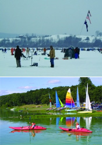

- Picnicking
- Open and shaded grounds
- Tables and grills
- Water taps and fountains
- Playfield
- Playground equipment
- Horseshoe pits
- Restrooms
- Three Picnic shelters-100 person capacity, available by reservation. Click here for online reservations at reserveamerica.com. - call 607.778.2193. Shelter rental rates are $90.00 on weekends/holidays, along with a reduced rate of $30.00 on non-holday weekdays. A $5 transaction fee is applied to all reservations.
- Two-mile paved walking/biking path; participant in the Wegman's "Passport to Family Wellness" program.
- Volleyball nets
- Youth Group Camping Area for organized youth groups; call 607-778-2193 for information or a permit. Please call at least one week in advance of your planned arrival.
Dorchester Park

The easy access of the launching area to a 1,200 acre reservoir has made Dorchester the small boat haven of Broome County. Rental boats are available, Memorial Day weekend-Labor Day, or bring your own. Boating, plus the many other outstanding facilities of this beautiful waterside park, truly offer something for the entire family. Dorchester is the site of the Almost-Annual Crappie Derby ice fishing contest, and the Annual Broome County Parks Triathlon.
Find us on facebook!
For more information, call 607.692.4612.
- 1,200 acre reservoir
- New York State boat launch
- Parking for 70 cars and trailers
- Motors with 25 hp or less permitted (max 10 mph)
- Rental boats are available from 11:00 a.m. to 7:30 p.m. Memorial Day weekend through Labor Day. (Hours may vary)
| Boat | Deposit (rental fee taken out of deposit) | Per Hour | Per Day |
|---|---|---|---|
| Paddleboards/Kayaks | $10.00 | $8.00 | NA |
| Sailboats | $10.00 | $8.00 | $30.00 |
| Stand-Up Paddleboards | $10.00 | $8.00 | NA |
| Rowboats/Canoes | $10.00 | $5.00 | $20.00 |
| Sr. Citizen(age 60+) /Veteran Rowboat/Canoe* | $5.00 | $3.00 | $10.00 |
*Veteran must present the Broome County Veteran ID card at the park to receive discount. More information may be found here.
- White sand beach; open 11:00am - 7:30pm, Memorial Day weekend-Labor Day (hours may vary)
- Certified lifeguards
- Changing areas
- Fish for pike, bass and panfish
- Fish from shore, inlet, or rental boats
- Ice fishing permitted, pending safe ice conditions.
- Group camping, by organized youth groups, (e.g. church youth groups, schools, YMCA, YWCA, Boy Scouts, Girl Scouts) is permitted.
- To secure a permit, or request additional information, call 607.778.2193. Please call for a permit at least one week prior to the date requested
Get Directions
5469 NY Rt. 26
Whitney Point, NY 13862
607.692.4612
FROM CORTLAND:
Rt.81 South to Exit 8 (Whitney Point). Turn left at end of exit ramp. At second light take a left and go over bridge, turn left after bridge, park is 2 miles on left.
FROM BAINBRIDGE/GREENE:
Rt.206 West to Whitney Point. Turn right at stop sign. Park is 2 miles on left.
FROM JOHNSON CITY/BINGHAMTON:
Rt.17 to Rt. 81 North to Exit 8 (Whitney Point). Take right off exit ramp, turn left at "T" in road. Turn right over bridge. After bridge turn left, park is 2 miles on left.
FROM ENDICOTT/VESTAL:
Rt.26 North to Whitney Point. Take left at "T" in road. Take right over bridge, then left after bridge, park is 2 miles on left.
FROM NEWARK VALLEY/OWEGO:
Rt.38 to Rt. 38B, turn left on Rt. 26 North to Whitney Point. Take a left a "T" in road, take right over bridge, turn left just after bridge, park is 2 miles on left.
FROM ITHACA:
Rt.79 East to Lisle. Bear right just over bridge. Go to second light in Whitney Point. Turn left over bridge, turn left just after bridge, park is 2 miles on left.